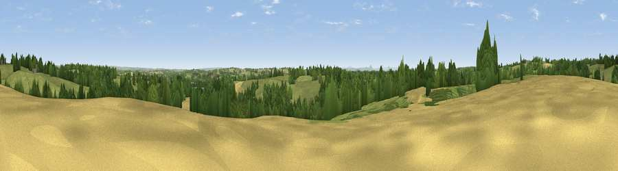

Viewpoint near Croxton
#37172 in England · top 66% of its area beats it · near CroxtonWhere it is
The exact computed spot (SJ 78975 30275). Click the marker for map links.
The view, rendered

A 360° render of this exact spot computed from the terrain model, tree cover and land cover — summer colours, afternoon light, calibrated against photographs of famous viewpoints. Real trees, hedges and buildings will differ in detail.
The panorama
Grey silhouette: terrain skyline in each direction (720 bearings, Earth curvature and refraction included). Dashed green: skyline with trees (+15 m) and buildings (+8 m) as obstacles. Blue strip: how far the ground is visible on each bearing.
Where the view opens
Wedge length = distance to the farthest visible ground on that bearing (vegetation-aware). Rings at 10, 25 and 50 km.
What fills the view
52% grassland · 28% woodland · 17% cropland · 1% built-up ·
Angular shares of the visible panorama (visual magnitude), not map area. Landscape diversity 0.47 (0–1 Shannon).
Key numbers
More beautiful places nearby
The staircase of upgrades: each row has a higher view potential than everything closer. Driving times are estimates from straight-line distance, calibrated against real road routing — check an actual route before setting out.
| Place | Direction | Drive | Score |
|---|---|---|---|
| Viewpoint near Croxton | ENE · 2 km | ~5 min | 48.3 |
| Viewpoint near Hookgate | NW · 5 km | ~11 min | 48.4 |
| Hob Hill | SSE · 6 km | ~13 min | 59.2 |
| Viewpoint near Swynnerton | NE · 8 km | ~17 min | 59.4 |
| Viewpoint near Beech | NE · 10 km | ~20 min | 62.9 |
| Viewpoint near Forton | SSW · 11 km | ~20 min | 63.8 |
| Viewpoint near Newport | SSW · 11 km | ~21 min | 66.4 |
| Viewpoint near Madeley | NNW · 14 km | ~26 min | 66.7 |
52.86954, -2.31378 · source: screening · position refined by local search. Computed location — check access rights before visiting.